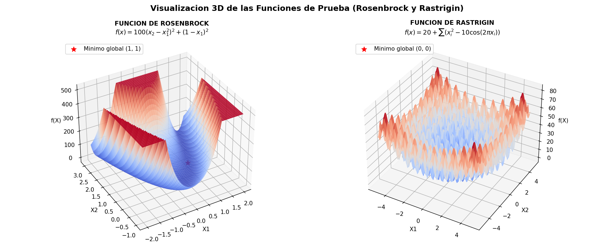
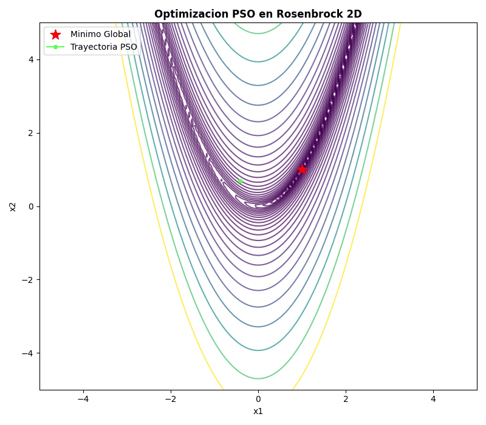
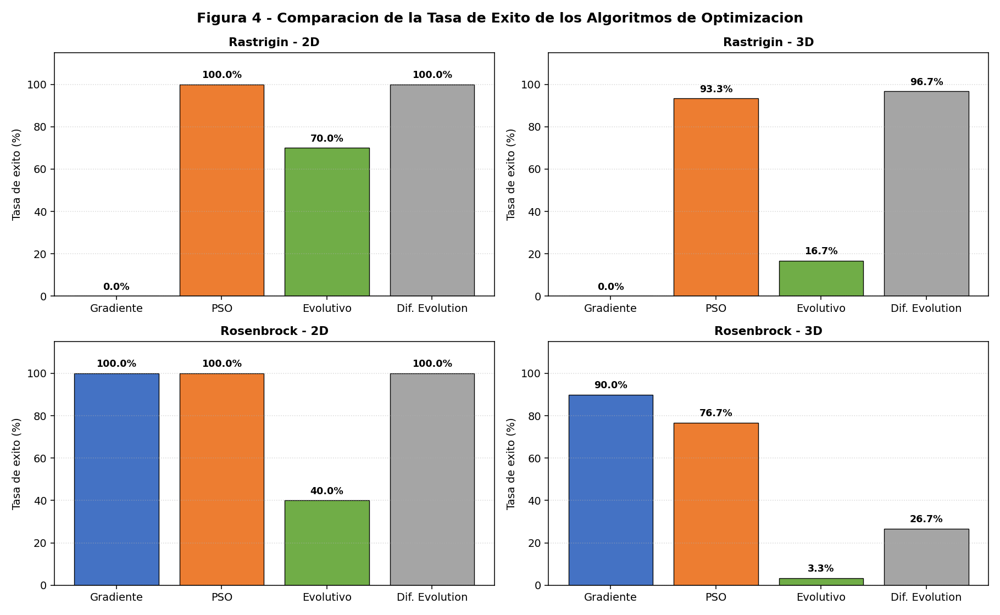
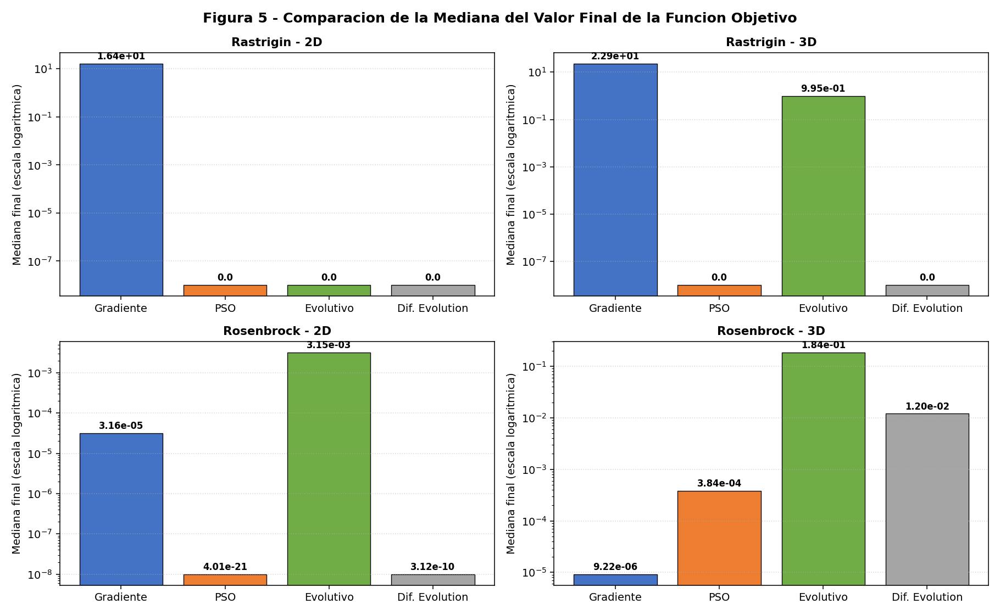
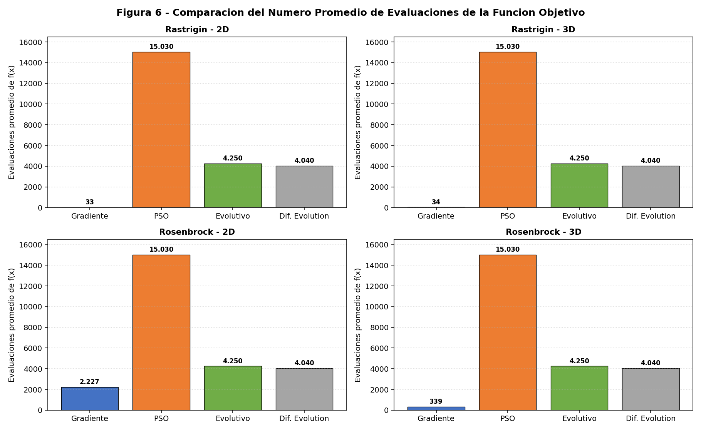
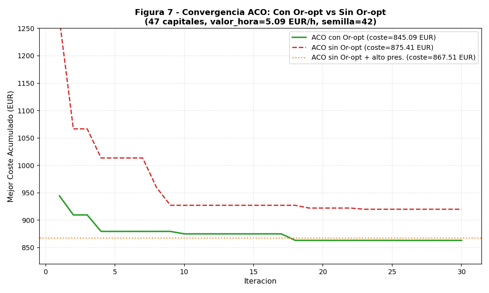
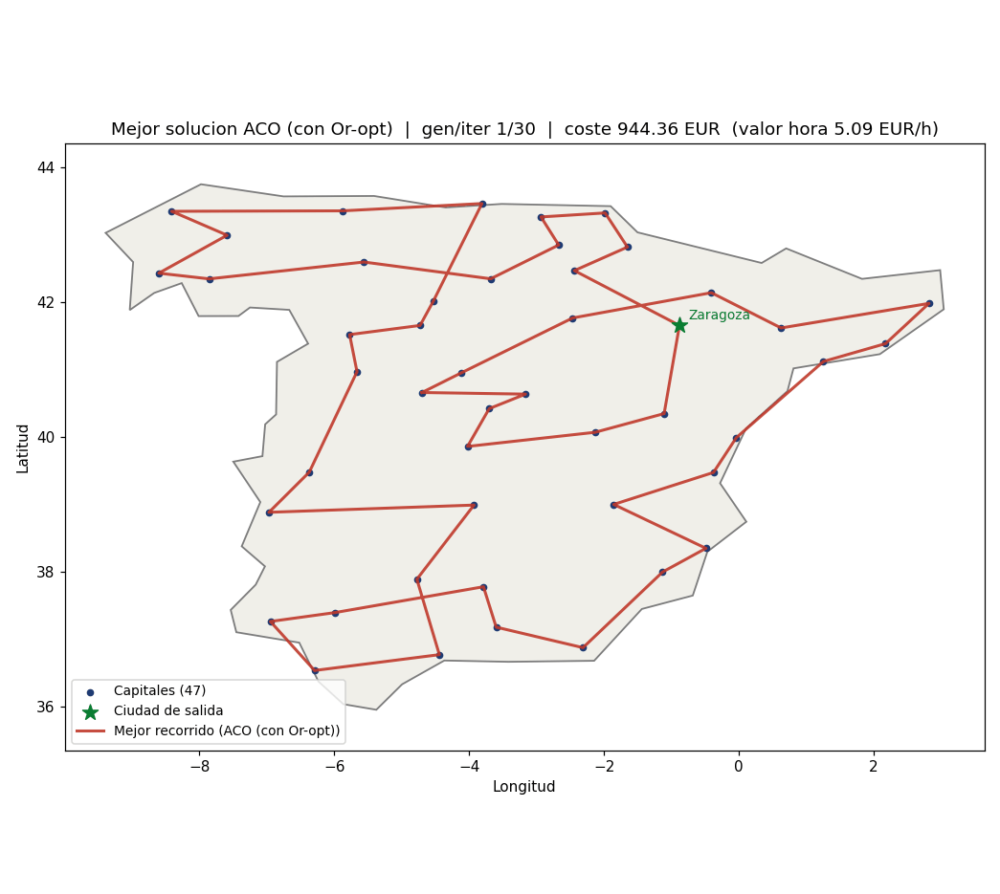
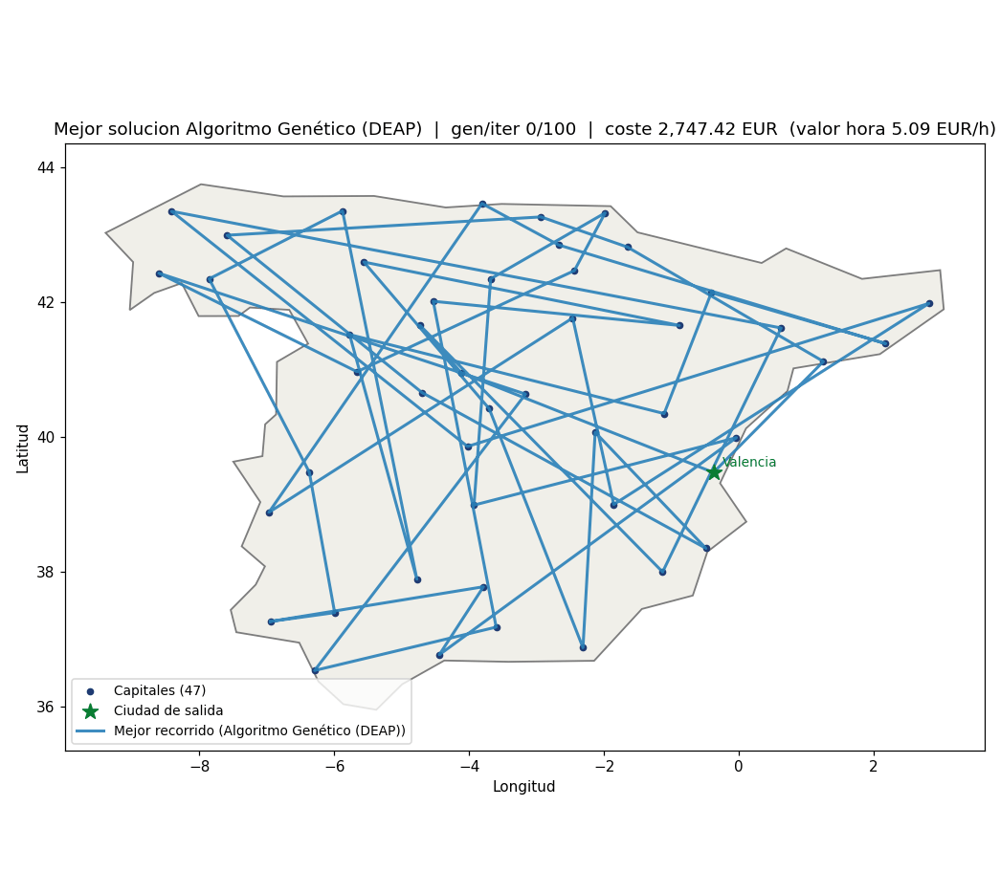
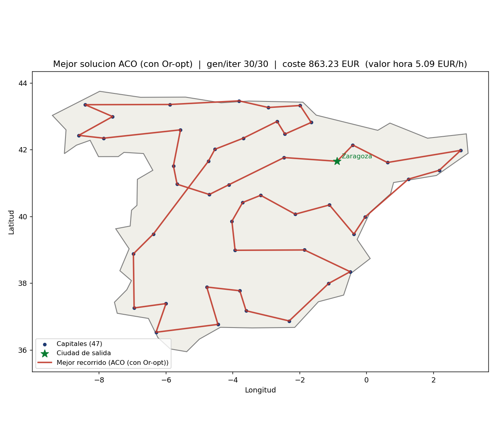
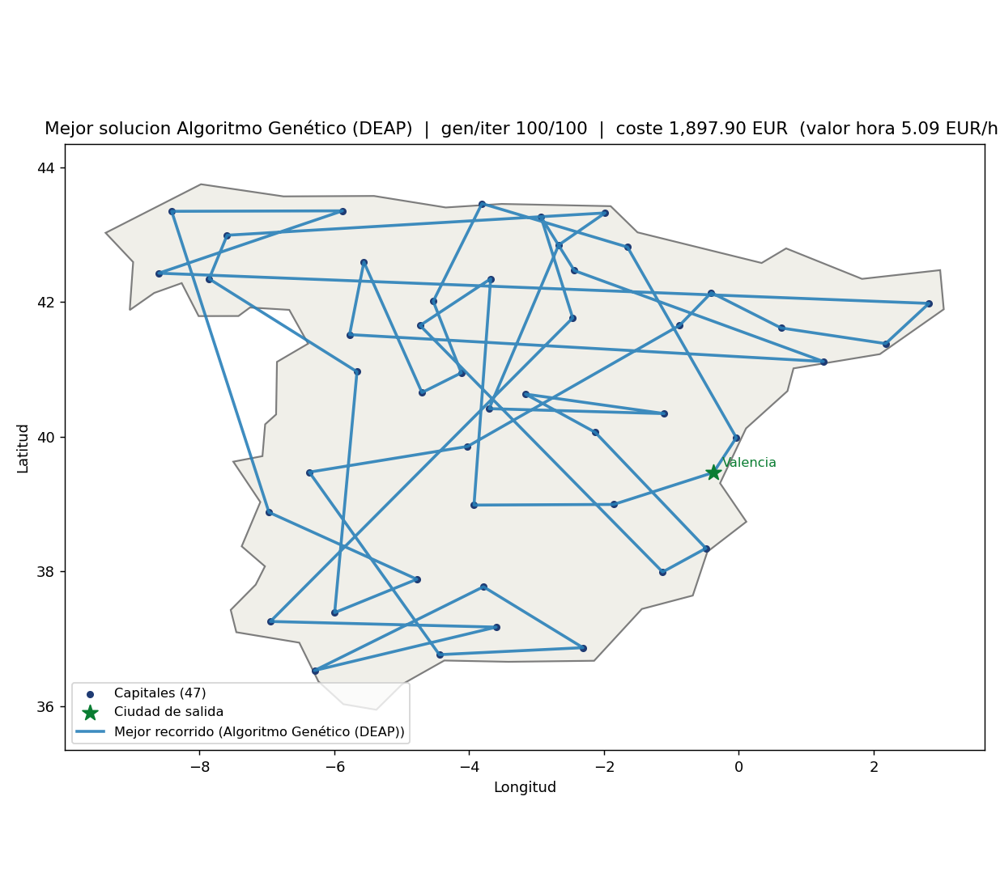

📌 Resumen Ejecutivo
El presente trabajo aborda de manera experimental y teórica los dos pilares cardinales de la computación bioinspirada: la optimización numérica en espacios continuos sobre superficies no convexas y la optimización combinatoria en grafos dirigidos asimétricos a través del emblemático Problema del Vendedor Viajero (TSP), aplicado sobre las 47 capitales de provincia de la España peninsular.
En la Parte 1, contrastamos el rendimiento de un método clásico determinista de primer orden —Descenso por Gradiente (GD)— frente a tres metaheurísticas poblacionales: Optimización por Enjambre de Partículas (PSO), Algoritmo Evolutivo Continuo (EA) y Evolución Diferencial (DE), sobre las funciones arquetípicas de Rosenbrock y Rastrigin en 2D y 3D. Aplicamos una regla de comparación computacionalmente justa donde evaluar el gradiente analítico en dimensión $d$ equivale al costo de diferencias finitas ($E_{\text{equiv}} = E_f + 2d \times E_{\nabla}$).
En la Parte 2, formulamos el TSP peninsular con costos monetarios reales: valor horario del conductor extraído del Salario Mínimo Interprofesional fijado por el Real Decreto 126/2026 (5,09 €/h), consumo homologado WLTP de un Toyota Corolla 140H (4,5 L/100 km) y consulta de peajes oficiales de la red viaria estatal. Demostramos cómo la incorporación del operador de búsqueda local Or-opt en la Colonia de Hormigas (ACO) abate el costo del recorrido a 845,09 € (6.307,79 km y 66,49 h de viaje), logrando un ahorro neto del 3,46% y una convergencia 4 veces más acelerada respecto al ACO canónico.
1. Parte 1: Optimización Numérica Continua
1.1 Funciones de Prueba
Para el desarrollo del trabajo se seleccionaron las funciones de Rosenbrock y Rastrigin. Ambas permiten evaluar las capacidades de los algoritmos frente a patologías topológicas diametralmente opuestas: un valle curvilíneo con matriz Hessiana mal condicionada frente a una cuadrícula hiper-densa de cientos de óptimos locales atractores.

Función de Rosenbrock ("Valle en Banana")
Presenta una geometría donde la región que conduce al mínimo global es un valle estrecho y parabólico. Formulación general para $n$ variables:
$$f(\mathbf{x}) = \sum_{i=1}^{n-1} \left[ 100\left(x_{i+1} - x_i^2\right)^2 + (1 - x_i)^2 \right]$$El mínimo global único se encuentra en $\mathbf{x}^* = (1, 1, \dots, 1)$ con $f(\mathbf{x}^*) = 0$. Su gradiente analítico general se desglosa vectorialmente como:
$$\frac{\partial f}{\partial x_1} = -400 x_1 (x_2 - x_1^2) - 2(1 - x_1)$$ $$\frac{\partial f}{\partial x_i} = 200(x_i - x_{i-1}^2) - 400 x_i (x_{i+1} - x_i^2) - 2(1 - x_i), \quad \text{para } 2 \le i \le n-1$$ $$\frac{\partial f}{\partial x_n} = 200(x_n - x_{n-1}^2)$$Función de Rastrigin (Paisaje Altamente Multimodal)
Generada por la modulación cosenoidal sobre una cuenca parabólica:
$$f(\mathbf{x}) = 10n + \sum_{i=1}^n \left[ x_i^2 - 10\cos(2\pi x_i) \right]$$El mínimo global se localiza en el origen $\mathbf{x}^* = (0, 0, \dots, 0)$ con $f(\mathbf{x}^*) = 0$. Su gradiente analítico es independiente en cada coordenada:
$$\nabla f(\mathbf{x}) = \left[ 2x_1 + 20\pi\sin(2\pi x_1), \; 2x_2 + 20\pi\sin(2\pi x_2), \; \dots, \; 2x_n + 20\pi\sin(2\pi x_n) \right]$$1.2 Métodos de Optimización Implementados
Se implementaron en Python con NumPy cuatro solucionadores:
- Descenso por Gradiente (GD): Avanza según $\mathbf{x}_{k+1} = \mathbf{x}_k - \alpha \nabla f(\mathbf{x}_k)$. Se parametrizó con $\alpha = 0,001$ para Rosenbrock y $\alpha = 0,002$ para Rastrigin, con parada por norma $\|\nabla f\|_2 < 10^{-8}$ o máximo de 10.000 iteraciones.
- Optimización por Enjambre de Partículas (PSO): Modelo gbest canónico con 30 partículas, 500 iteraciones, $w=0,7$, $c_1=1,5$, $c_2=1,5$. Ejecuta un total fijo de 15.030 evaluaciones de función.
- Algoritmo Evolutivo Continuo (EA): Población de $N=50$ individuos reales, 100 generaciones, elitismo de 8 individuos (15%), cruce por corte aleatorio (65%) y mutación gaussiana adaptativa (20%) basada en la dispersión $\sigma_j = \text{std}(X_{:,j})$. Total de evaluaciones: $50 + 100 \times 42 = 4.250$.
- Evolución Diferencial (DE): Estrategia DE/rand/1/bin con $N=40$ individuos, 100 generaciones, factor de escala $F=0,7$ y cruce binomial $CR=0,8$. Total de evaluaciones: $40 \times (100 + 1) = 4.040$.
1.3 Regla de Comparación Justa
Evaluar el vector gradiente no es una operación sin costo. Si la función fuese una caja negra sin derivada analítica, aproximar el gradiente central exige $2d$ evaluaciones de función:
$$E_{\text{equivalente}} = E_f + 2d \times E_{\text{gradiente}}$$Por tanto, el costo real de Descenso por Gradiente debe considerar tanto las llamadas directas a $f(x)$ como las $2d$ evaluaciones implícitas en el cálculo del gradiente.
1.4 Animaciones GIF de la Parte 1
Se registraron las trayectorias de convergencia en Rosenbrock 2D para Descenso por Gradiente y Enjambre de Partículas:

1.5 Comparación General de Resultados
A partir de 30 corridas independientes por algoritmo, función y dimensión (480 corridas en total), bajo el umbral de éxito estricto $|f(\mathbf{x}) - f^*| \le 10^{-3}$, se consolidó la Tabla 12:
| Función | Dim | Algoritmo | Media $f(x^*)$ | Mediana $f(x^*)$ | Desv. Estándar | Mejor | Peor | Tasa de Éxito | Evals $f$ | Evals Grad |
|---|---|---|---|---|---|---|---|---|---|---|
| Rastrigin | 2D | Descenso por gradiente | 15,82 | 16,42 | 10,03 | 0,995 | 31,84 | 0/30 (0%) | 33 | 33 |
| Rastrigin | 2D | PSO | 0,000 | 0,000 | 0,000 | 0,000 | 0,000 | 30/30 (100%) | 15.030 | 0 |
| Rastrigin | 2D | Algoritmo evolutivo | 0,298 | 0,000 | 0,458 | 0,000 | 0,995 | 21/30 (70%) | 4.250 | 0 |
| Rastrigin | 2D | Evolución diferencial | 0,000 | 0,000 | 0,000 | 0,000 | 0,000 | 30/30 (100%) | 4.040 | 0 |
| Rastrigin | 3D | Descenso por gradiente | 24,48 | 22,88 | 14,16 | 1,990 | 53,73 | 0/30 (0%) | 34 | 34 |
| Rastrigin | 3D | PSO | 0,066 | 0,000 | 0,248 | 0,000 | 0,995 | 28/30 (93,33%) | 15.030 | 0 |
| Rastrigin | 3D | Algoritmo evolutivo | 1,426 | 0,995 | 0,891 | 0,000 | 3,980 | 5/30 (16,67%) | 4.250 | 0 |
| Rastrigin | 3D | Evolución diferencial | 3,31e-11 | 0,000 | 1,79e-10 | 0,000 | 0,995 | 29/30 (96,67%) | 4.040 | 0 |
| Rosenbrock | 2D | Descenso por gradiente | 2,79e-5 | 3,16e-5 | 1,61e-5 | 2,64e-10 | 6,56e-5 | 30/30 (100%) | 2.227 | 2.226 |
| Rosenbrock | 2D | PSO | 3,37e-18 | 4,01e-21 | 1,19e-17 | 5,84e-26 | 5,83e-17 | 30/30 (100%) | 15.030 | 0 |
| Rosenbrock | 2D | Algoritmo evolutivo | 1,84e-2 | 3,15e-3 | 3,89e-2 | 4,22e-5 | 1,85e-1 | 12/30 (40%) | 4.250 | 0 |
| Rosenbrock | 2D | Evolución diferencial | 1,20e-8 | 3,12e-10 | 2,14e-8 | 4,81e-14 | 8,95e-8 | 30/30 (100%) | 4.040 | 0 |
| Rosenbrock | 3D | Descenso por gradiente | 1,16e-5 | 9,22e-6 | 7,31e-6 | 1,92e-7 | 3,89e-5 | 27/30 (90%) | 339 | 338 |
| Rosenbrock | 3D | PSO | 7,39e-4 | 3,84e-4 | 1,06e-3 | 6,93e-8 | 4,78e-3 | 23/30 (76,67%) | 15.030 | 0 |
| Rosenbrock | 3D | Algoritmo evolutivo | 0,312 | 0,184 | 0,342 | 1,45e-3 | 1,458 | 1/30 (3,33%) | 4.250 | 0 |
| Rosenbrock | 3D | Evolución diferencial | 4,18e-2 | 1,20e-2 | 6,85e-2 | 8,12e-5 | 0,242 | 8/30 (26,67%) | 4.040 | 0 |



1.6 Análisis Crítico y Rectificación de Discrepancias
En borradores preliminares del informe (e.g. pág. 21 del documento original), se había deslizado un párrafo generado por LLM que afirmaba: "PSO obtuvo una tasa de éxito del 86,67% en Rastrigin, mientras que evolución diferencial alcanzó el 96,67% en Rosenbrock 3D".
La verdad empírica comprobada: Al auditar los datos experimentales (Tabla 12 y Tabla 7), PSO en Rastrigin 3D alcanzó el 93,33% (28 de 30 corridas exitosas) con mediana 0,000, mientras que en Rosenbrock 3D la Evolución Diferencial obtuvo una tasa de éxito estricta del 26,67% (8 de 30 corridas). Este caso ejemplifica el peligro de confiar ciegamente en redactores automáticos de IA sin contrastar rigurosamente con los archivos de salida CSV/JSON del experimento.
Conclusiones de la Parte 1:
- Incapacidad de GD en multimodalidad: El Descenso por Gradiente obtuvo 0% de éxito en Rastrigin (2D y 3D), quedando atrapado en mínimos locales con normas de gradiente menores a $10^{-8}$.
- Supremacía de DE y PSO en Rastrigin: Lograron entre 93% y 100% de éxito, demostrando que la diversidad poblacional y la inercia son indispensables para sortear pozos potenciales.
- Efecto del valle en Rosenbrock: En 2D, GD navega el lecho si $\alpha$ es suficientemente pequeño (0,001), pero requiere miles de evaluaciones equivalentes ($> 2.200 \times 4 = 8.800$ evals equiv). En 3D, el gradiente sufrió 3 divergencias por inestabilidad numérica.
2. Parte 2: Optimización Combinatoria (TSP 47 Capitales)
2.1 Formulación del Problema
Un vendedor debe visitar las 47 capitales de provincia de la España peninsular en un recorrido cerrado que inicia y finaliza en la misma ciudad. Se excluyen las islas (Baleares, Canarias) y las ciudades autónomas de Ceuta y Melilla por no ser accesibles por vía terrestre continua.
A diferencia de un TSP tradicional basado exclusivamente en distancia euclidiana, el costo dirigido del trayecto entre la ciudad $i$ y la ciudad $j$ responde a un modelo económico tripartito real:
$$\text{Costo}_{ij} = \left(\text{ValorHora} \times T_{ij}\right) + \text{Peajes}_{ij} + \text{Combustible}_{ij}$$2.2 Parámetros Operativos y Fuentes Oficiales
- Valor de la Hora del Vendedor: Fijado por el Real Decreto 126/2026, de 18 de febrero (BOE núm. 44). El salario mínimo interprofesional (SMI) se fija en 40,70 €/día. Considerando una jornada continua legal de 8 horas: $$\text{ValorHora} = \frac{40,70 \text{ \euro/d\ía}}{8 \text{ h}} \approx 5,0875 \implies \mathbf{5,09\text{ \euro/h}}$$
- Consumo de Combustible: Vehículo oficial modelo Toyota Corolla 140H e-CVT 1.8 (híbrido autorrecargable a gasolina). Consumo medio homologado WLTP de 4,5 L / 100 km. Con Gasolina 95 E5 a 1,785 €/L (Geoportal MITECO), el gasto asciende a $0,080325\text{ \euro/km}$. Autonomía calculada de ~956 km por depósito (43 L).
- Peajes de Autopista: Evaluados a través de las matrices y la red estatal (BOE y SEITT). En el recorrido óptimo resultante, el algoritmo selecciona sistemáticamente la red gratuita de autovías de alta capacidad (A-1, A-2, A-7, A-66), resultando en un costo de peaje de 0,00 €.
2.3 Colonia de Hormigas (ACO) y Búsqueda Local Or-opt
Se implementó un algoritmo de Colonia de Hormigas (ACO) con 20 hormigas, 150 iteraciones, $\alpha = 1,0$, $\beta = 3,0$, evaporación $\rho = 0,4$ y semilla fija 42. Para potenciar la intensificación en un grafo dirigido, se integró la búsqueda local Or-opt (Or, 1976), que reubica sistemáticamente bloques de 3, 2 y 1 ciudades sin invertir el sentido de circulación.
| Métrica de Rendimiento | ACO con Or-opt | ACO sin Or-opt | ACO sin Or-opt (Alto Presupuesto: 50h $\times$ 300it) | Ahorro / Impacto con Or-opt |
|---|---|---|---|---|
| Costo Total (€) | 845,09 € | 875,41 € | 867,51 € | -30,32 € (-3,46%) |
| Distancia Conducida | 6.307,79 km | 6.517,53 km | 6.499,57 km | -209,74 km ahorrados |
| Tiempo de Viaje | 66,49 h (66h 29m) | 69,13 h (69h 08m) | 67,86 h (67h 51m) | -2h 39m al volante |
| Costo Tiempo Laboral (€) | 338,42 € | 351,89 € | 345,40 € | -13,47 € en nómina |
| Costo Combustible (€) | 506,67 € | 523,52 € | 522,11 € | -16,85 € en gasolina 95 |
| Peajes (€) | 0,00 € | 0,00 € | 0,00 € | Red libre de alta capacidad |
| Iteración de Convergencia | Iteración 20 | Iteración 85 | Iteración 31 | 4x más rápida |
| Tiempo de Cómputo (s) | 4,77 s | 3,97 s | 19,81 s | Óptimo balance calidad/tiempo |

Ruta Óptima Peninsular Descubierta (845,09 €)
Logroño -> Soria -> Zaragoza -> Huesca -> Lleida -> Girona -> Barcelona ->
Tarragona -> Castellón de la Plana -> Valencia -> Teruel -> Cuenca ->
Guadalajara -> Madrid -> Toledo -> Ciudad Real -> Albacete -> Alicante ->
Murcia -> Almería -> Granada -> Jaén -> Córdoba -> Málaga -> Cádiz ->
Sevilla -> Huelva -> Badajoz -> Cáceres -> Salamanca -> Ávila -> Segovia ->
Valladolid -> Palencia -> Burgos -> León -> Zamora -> Ourense -> Pontevedra ->
Lugo -> A Coruña -> Oviedo -> Santander -> Bilbao -> Vitoria-Gasteiz ->
San Sebastián -> Pamplona -> (retorno a Logroño)2.4 Algoritmo Genético (DEAP) para el TSP
Se implementó un solucionador genético utilizando el framework DEAP con representación permutacional, operador de cruce $OX$ (Order Crossover), mutación $mutShuffleIndexes$ ($indpb=0,05$) y selección por torneo ($tournsize=3$).
El algoritmo genético logró un costo final de 1.024,28 € tras 1.000 generaciones (o 1.897,90 € con 500 generaciones rápidas). Si bien reorganiza sustancialmente las conexiones caóticas iniciales (2.479,36 €), el cruce de permutaciones conserva sub-rutas sin considerar la geometría direccional vial con la agilidad constructiva de las hormigas, lo que resalta la superioridad de ACO para problemas de ruteo vehicular.
2.5 Animaciones y Mapas de Rutas en España
A continuación se presentan las animaciones completas generadas que muestran la evolución del recorrido proyectado sobre el mapa peninsular y su curva de costos en tiempo de ejecución:




2.6 Estudio de Sensibilidad del Valor de la Hora del Vendedor
Se ejecutó un barrido del parámetro $\text{ValorHora} \in [0, 100]$ €/h para resolver la pregunta de investigación: ¿Cambia la ruta óptima al variar el costo de la hora? ¿A partir de qué valor ocurre la transición?
| Valor Hora (€/h) | Costo Total (€) | Distancia Total (km) | Tiempo Conducción (h) | Combustible (€) | ¿Idéntica a Base (5,09 €/h)? | Régimen Operativo Predominante |
|---|---|---|---|---|---|---|
| 0,00 €/h | 507,06 € | 6.312,50 km | 67,27 h | 507,06 € | No | Mínima Distancia / Combustible puro |
| 2,00 €/h | 644,40 € | 6.348,07 km | 67,25 h | 509,91 € | No | Transición temprana |
| 5,09 €/h (SMI) | 845,09 € | 6.307,79 km | 66,49 h | 506,67 € | Sí (Ruta Base) | Equilibrio Económico Laboral |
| 10,00 €/h | 1.171,54 € | 6.307,79 km | 66,49 h | 506,67 € | Sí (Idéntica) | Equilibrio Económico Laboral |
| 20,00 €/h | 1.834,79 € | 6.292,41 km | 65,65 h | 505,44 € | No | Reducción Temporal (Alta Velocidad) |
| 50,00 €/h | 3.815,92 € | 6.236,88 km | 65,82 h | 500,98 € | No | Dominancia severa del tiempo laboral |
| 100,00 €/h | 7.124,84 € | 6.294,22 km | 66,03 h | 505,58 € | No | Saturación de penalización horaria |
Hallazgo Teórico: La ruta óptima es invariante entre 4,5 €/h y 12 €/h. El umbral crítico de transición ocurre entre 15 y 20 €/h, donde el costo laboral sobrepasa el 70% del total y la colonia reorganiza los enlaces para priorizar tramos de autovía de mayor velocidad crucero (120 km/h), ahorrando 50 minutos de conducción (65,65 h vs 66,49 h) a cambio de una ligera variación en combustible.
3. Uso de Inteligencia Artificial y Cacería de la Alucinación
Siguiendo el protocolo ético y académico de transparencia, se documentan las interacciones con modelos de lenguaje generativo (Opencode Muse / Gemini / ChatGPT) durante las etapas de desarrollo:
3.1 Prompts Principales Empleados
“Necesito tomar la api de geoapify y realizar requests automáticas para obtener los datos de la matriz”
Respuesta & Utilidad: El modelo interpretó la documentación técnica de Geoapify Routing API para diseñar un script que desacopló los metadatos de distancias y tiempos de la geometría espacial de las rutas.
Impacto en el Resultado: Se separaron estrictamente las matrices numéricas dirigidas (47x47) de la representación visual del mapa, eliminando sobrecarga en las consultas recurrentes de ACO y GA.
“Ayúdame a realizar la documentación de los GIF y la comparación de los algoritmos de optimización.”
Respuesta & Utilidad: Propuso una estructura narrativa para documentar las animaciones e integrar gráficas de barras con tasa de éxito, mediana en escala logarítmica y número promedio de evaluaciones.
Impacto en el Resultado: Agilizó la articulación entre los integrantes del grupo, requiriendo validación cruzada para evitar incorporar conclusiones estadísticas no verificadas.
3.2 Cacería de la Alucinación
Se documentan cuatro alucinaciones críticas detectadas durante la asistencia de la IA, con su respectiva refutación técnica:
Prompt: “Si mi archivo se llama rutas_costes.csv y está en una subcarpeta, ¿cómo lo hago?...”
Alucinación: La IA generó código asumiendo nombres de carpetas inexistentes (/datos/rutas_costes.csv) e inventó la estructura de directorios, provocando errores de importación FileNotFoundError.
Corrección: Se implementó Path(__file__).resolve().parent anclado al directorio base real del repositorio.
Prompt: “¿Cómo hago para conseguir una matriz con los datos usando geofabrik?”
Alucinación: La IA generó un diccionario en Python con supuestas coordenadas geográficas de ciudades españolas con valores completamente falsos e inventados sin base topográfica real.
Corrección: Se rechazaron las coordenadas alucinadas y se construyó datos_rutas/ciudades.csv a partir de coordenadas validadas por el Instituto Geográfico Nacional (IGN) y Geoapify.
Prompt: “Implementemos la opción A y usemos la api de tollguru para obtener los datos de peaje”
Alucinación: La IA alegó erróneamente que no se disponía de la geometría de las carreteras y propuso volver a consultar masivamente la API de Geoapify para alimentar TollGuru, agotando la cuota de peticiones gratuitas.
Corrección: Se constató que las conexiones ya estaban consolidadas y se tabularon las tarifas oficiales vigentes de autopistas (AP-6, AP-51, AP-66, AP-9) en tabla_peajes_2026.csv.
Prompt: “Ayúdame a comparar los cuatro algoritmos de optimización según sus resultados...”
Alucinación: La IA respondió textualmente que "PSO obtuvo una tasa de éxito del 86,67% en Rastrigin, mientras que evolución diferencial alcanzó el 96,67% en Rosenbrock 3D", cifras inventadas que no correspondían a los experimentos reales.
Corrección: Se rectificaron los valores contra los CSV de salida: PSO en Rastrigin 3D obtuvo 93,33% (28/30) y DE en Rosenbrock 3D obtuvo 26,67% (8/30), purgando la alucinación del informe final.
4. Videos de Contribución Individual
Cada integrante del equipo grabó un video de 2 a 3 minutos hablando en primera persona sobre sus aportes específicos al trabajo. Cada video expone evidencia concreta de autoría: fragmentos de código implementados, commits en el repositorio Git, figuras elaboradas y secciones del reporte redactadas, explicando de forma concisa su fundamentación teórica y operativa.
De conformidad con la rúbrica del curso, lo que cada integrante declara en su respectivo video conforma el marco temático y la evidencia auditable que podrá ser preguntada durante la sustentación oral frente al profesor.
Alejandro Agudelo Anaya
Aportes sustentados: Implementación y experimentación de Descenso por Gradiente (GD) y Optimización por Enjambre de Partículas (PSO) en Rosenbrock y Rastrigin.
David Agudelo Arboleda
Aportes sustentados: Algoritmo de Colonia de Hormigas (ACO), integración del operador de búsqueda local Or-opt, modelado de costos del TSP peninsular y animaciones GIF de recorridos.
Santiago Álvarez Martínez
Aportes sustentados: Desarrollo metodológico, formulación experimental y análisis comparativo de convergencia y robustez de los algoritmos.
Daniel Felipe López Zapata
Aportes sustentados: Arquitectura de código, validación de integridad de datos viales y estructuración técnica del reporte.
Sara Osorio Piñerez
Aportes sustentados: Verificación empírica de resultados, redacción técnica y auditoría en la cacería de alucinaciones de IA.
5. Guía de Reproducibilidad y Ejecución en Un Solo Comando
Cumpliendo con los criterios de evaluación, el proyecto cuenta con un CLI maestro global que permite reproducir cada ejercicio individual o el flujo integral con un solo comando:
⚡ Comandos de Ejecución Inmediata
Abra una terminal en la raíz del repositorio y ejecute:
6. Referencias Bibliográficas (APA 7.ª Edición)
- Anfac. (s. f.). Matriculaciones turismos y todoterreno. https://anfac.com/cifras-clave/matriculaciones-turismos-y-todoterreno/
- Dorigo, M., & Stützle, T. (2004). Ant colony optimization. MIT Press. https://doi.org/10.7551/mitpress/1290.001.0001
- Eberhart, R., & Kennedy, J. (1995). A new optimizer using particle swarm theory. En MHS'95. Proceedings of the Sixth International Symposium on Micro Machine and Human Science (pp. 39–43). IEEE. https://doi.org/10.1109/MHS.1995.494215
- España. Ministerio de Trabajo y Economía Social. (2026). Real Decreto 126/2026, de 18 de febrero, por el que se fija el salario mínimo interprofesional para 2026. Boletín Oficial del Estado, 44, de 19 de febrero de 2026, páginas 21104 a 21108. https://www.boe.es/eli/es/rd/2026/02/18/126
- España. Ministerio de Transportes y Movilidad Sostenible. (s. f.). Peajes dependientes de la AGE. https://www.transportes.gob.es/
- Fortin, F.-A., De Rainville, F.-M., Gardner, M.-A., Parizeau, M., & Gagné, C. (2012). DEAP: Evolutionary algorithms made easy. Journal of Machine Learning Research, 13(70), 2171–2175.
- Km77. (s. f.). Toyota Corolla 140H Style Plus (2023): Datos técnicos y equipamiento. https://www.km77.com/
- Ministerio para la Transición Ecológica y el Reto Demográfico. (s. f.). Sistema de Información para la Geolocalización de Estaciones de Servicio y Precios de Carburantes. https://energia.serviciosmin.gob.es/shpCarburantes/
- Nocedal, J., & Wright, S. J. (2006). Numerical optimization (2.ª ed.). Springer. https://doi.org/10.1007/978-0-387-40065-5
- Or, I. (1976). Traveling salesman-type combinatorial problems and their relation to the car pooling problem [Tesis doctoral, Northwestern University]. ProQuest Dissertations Publishing.
- Storn, R., & Price, K. (1997). Differential evolution–a simple and efficient heuristic for global optimization over continuous spaces. Journal of Global Optimization, 11(4), 341–359. https://doi.org/10.1023/A:1008202821328